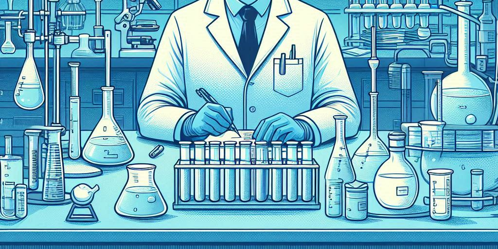
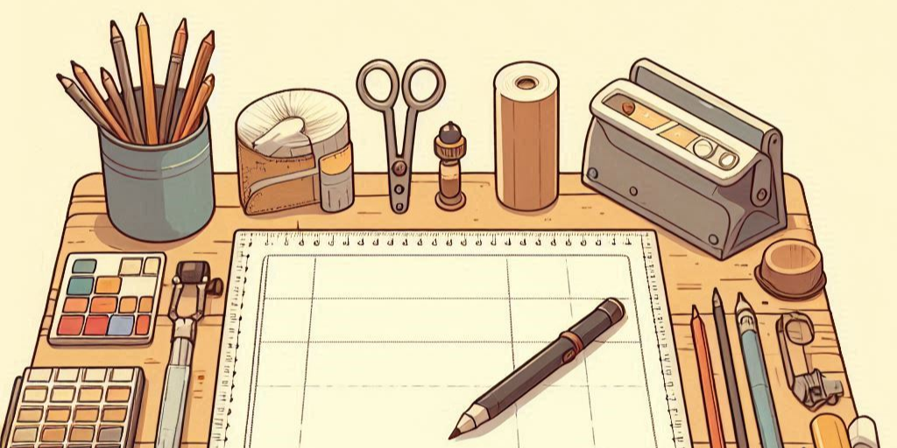
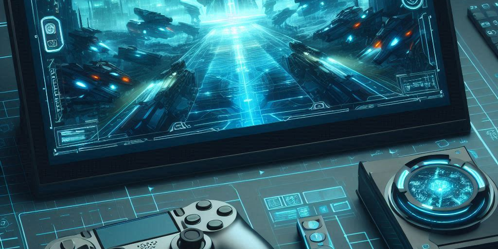
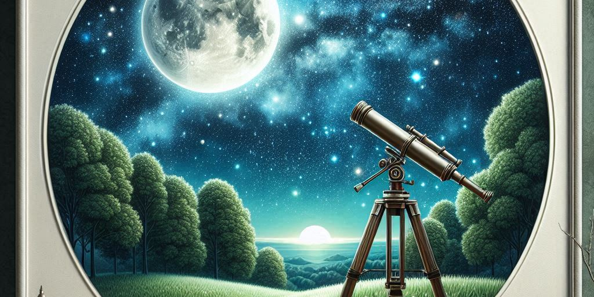
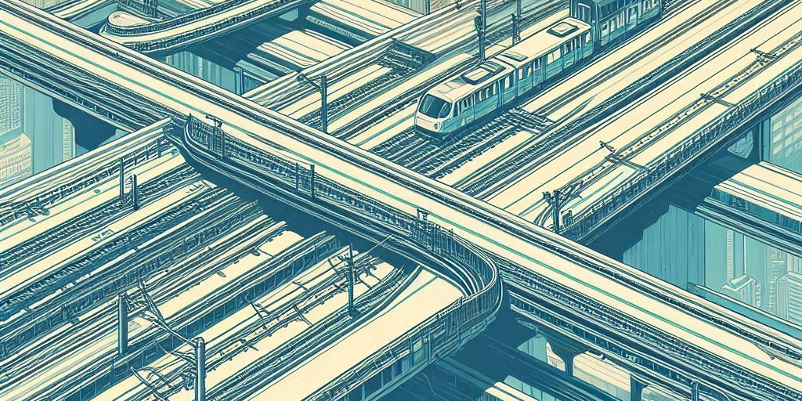
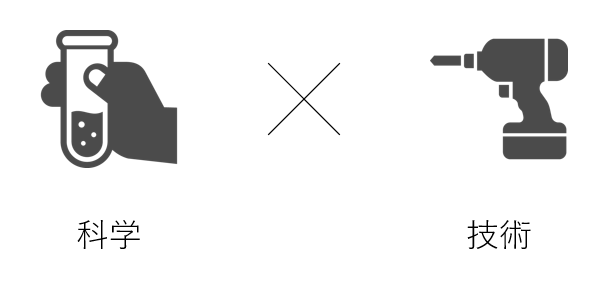

この内容は完全にフィクションです。
概要
学校方針
京都工學院大学は様々なことに積極的に挑戦し、日本の将来を担うフロンティア精神を持った人材を育成する4年制大学です。
歴史
2025年 4月9日：沖ノ鳥島・東京・京都に新キャンパス設置
この内容は完全にフィクションです
学部学科の案内
サイエンス学部
キャンパス
京都稲荷キャンパス
学科目
- 物理化学科
- 生物化学科
- 電気・電子科
概要
未知の事象に対する好奇心を尊重し、学問への昇華をサポートします。
環境デザイン学部
キャンパス
京都稲荷キャンパス
学科目
- 都市工学科
- 建築学科
概要
人を構成する有機と建材である無機を融合し、新たな価値観の創出を行います。
e-スポーツ学部
キャンパス
東京キャンパス
学科目
- プログラム課程
- 競技課程
概要
無限に連続する0と1の羅列を文化とし、未来へ通用する人材の育成を目指します。
宇宙フロンティア
学部

キャンパス
沖ノ鳥島キャンパス
学科目
- 天文学科
概要
数多の波は曲線に統ばる。天体観測に適した沖ノ鳥島で人類の限界に挑みます。
鉄道プロジェクト
工学部

キャンパス
京都稲荷キャンパス
学科目
- 鉄道工学科
概要
学びに終点はあるのだろうか⋯
鉄道に精通した教員があなたの目指すゴールまでの敷設をサポートします。
新学部設立予定...
特色(本当)
科学と技術の2系統について追及しています。

実績(本当)
取得資格
危険物取扱者乙種第1,2,3,4,5,6類
化学分析技能士3級
参加学会発表
ジュニア日本農芸化学会2024
日本金属学会2024年春期講演大会 高校生・高専学生ポスター発表
第18回分子科学討論会 高校生ポスター発表
2024年度 第3回関西電機科学研究会 高校生チャレンジ
第66回 日本植物生理学会年会 高校生生物研究発表会
参加大会
第48回全国高等学校総合文化祭 自然科学部門
第41回京都府高等学校総合文化祭総合文化祭 自然科学部門
物理:部門優勝、化学:審査員特別賞
第49回全国高等学校総合文化祭 自然科学部門 (予定)
令和6年度高校生ものづくりコンテスト京都府大会 電気工事部門 優勝
令和6年度高校生ものづくりコンテスト京都府大会 電子回路組立部門 優勝
第41回高校生ものづくりコンテスト近畿大会 電気工事部門・電子回路組立部門 4位